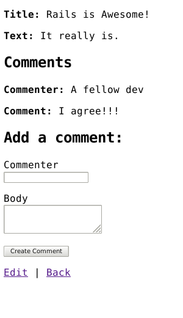

1 手冊假設
本手冊是為了 Rails 初學者而設計的。無需具備任何有關 Rails 的經驗。
Rails 是一個建立在 Ruby 程式語言上的 Web 應用程式框架。如果您以前沒有使用 Ruby 的經驗，那麼您會發現直接進入 Rails 的學習曲線非常陡峭。這裡提供幾個 Ruby 學習的線上資源：
請注意，有些資源雖然仍然很好，但它包含了舊版本的 Ruby，而且可能缺少在 Rails 的日常開發中會看到的某些語法。
2 什麼是Rails？
Rails 是一個用 Ruby 程式語言編寫的 Web 應用程式開發框架。它的目標在於通過假設每個開發人員都需要入門來簡化 Web 應用程式的開發。與許多其他語言和框架相比，它可讓您編寫更少的程式碼，同時完成更多的工作。有經驗的 Rails 開發人員還報告說，它使 Web 應用程式 開發更加有趣。
Rails 是自以為是的軟體。它假設存在一種“最佳”的做事方式，並且的目標在於鼓勵這種方式-並在某些情況下不鼓勵其他選擇。如果您學習“ The Rails Way”，您可能會發現生產力得到了巨大的提升。如果您堅持將其他語言的舊習慣帶入 Rails 開發，並嘗試使用在其他地方學到的模式，則可能會感到痛苦。
Rails 哲學包括兩個主要指導原則：
- 不要重複自己（Don't Repeat Yourself）： DRY 是軟體開發的原則，其中指出“每條知識在系統中必須具有單一，明確，權威的表示形式”。儘量避免撰寫重複的資訊，我們的程式碼將更易於維護，可擴充且錯誤更少。
- 約定優於配置（Convention Over Configuration）： Rails 對在 Web 應用程式中執行許多操作的最佳方法持意見，並且默認使用這組約定，而不是要求您通過無盡的配置文件指定細節。
3 建立一個新的 Rails 專案
閱讀本篇教學的最佳方法是按照步驟走。本篇教學的步驟對於執行應用程式都是完整的，不需要其他程式碼或步驟。
透過本篇教學，您將建立一個名為 blog（非常簡單的部落格）的 Rails 專案。不過在此之前，您需要先確定是否已經安裝了 Rails。
本文的範例中會用 $ 來表示類 Unix 系統的命令提示字元，但實際上顯示可能不盡相同。如果你是 Windows 的使用者，那命令提示字元會類似於 c:\source_code>。
3.1 安裝 Rails
在安裝 Rails 之前，需要先安裝以下幾個套件：
- Ruby
- SQLite3
- Node.js
- Yarn
3.1.1 安裝 Ruby
首先打開命令列。在 macOS 底下，請打開 Terminal.app; 如果是在 Windows 上，請從開始功能表選擇 “執行”，然後輸入 cmd.exe。 任何命令都應該在 $ 符號後面執行。確認您已安裝最新版本的 Ruby：
$ ruby --version
ruby 2.5.0
Rails 需要 Ruby 2.5.0 或更高版本。如果返回的版本號小於該版本號（例如 2.3.7 或 1.8.7），則需要安裝 Ruby 的新副本。
要在Windows上安裝Rails，首先需要安裝Ruby Installer。
有關大多數操作系統的更多安裝方法，請訪問 ruby-lang.org。
3.1.2 安裝 SQLite3
您還將需要安裝 SQLite3 資料庫。許多流行的類UNIX作業系統附帶了可接受的 SQLite3 版本。您可以在 SQLite3 網站 上找到安裝說明。
驗證它是否已正確安裝並在您的 PATH 之中：
$ sqlite3 --version
這行指令將會顯示他的版本。
3.1.3 安裝 Node.js 和 Yarn
最後，您將需要安裝 Node.js 和 Yarn 來管理應用程式中的 JavaScript。
您可以在 Node.js 網站 中找到安裝說明，並使用以下命令驗證其是否正確安裝：
$ node --version
這行指令會顯示出 Node.js 執行的版本。請確保它大於 8.16.0。
接下來要安裝 Yarn，請按照 Yarn 網站 上的安裝說明進行操作。
執行此命令應該顯示出 Yarn 的版本：
$ yarn --version
如果顯示類似 “1.22.0” 的訊息，則表明 yarn 已正確安裝。
3.1.4 安裝 Rails
要安裝 Rails，請使用 gem install 這個由 RubyGems 提供的命令：
$ gem install rails
要驗證是否已正確安裝所有套件，您應該能夠執行以下命令：
$ rails --version
如果顯示類似 “Rails 6.0.0” 的訊息，則可以繼續。
3.2 建立部落格應用程式
Rails 附帶了許多稱為產生器的腳本，這些腳本的目標在於通過創建開始執行特定任務所需的一切來簡化開發工作。其中之一是新的應用程式生成器，它將為您提供全新的 Rails 應用程式的基礎，因此您不必自己編寫它。
要使用此生成器，請打開一個終端機，導航到您有權創建文件的目錄，然後運行：
$ rails new blog
這將在 blog 目錄中創建一個名為 Blog 的 Rails 應用程式，並使用 bundle install 安裝在 Gemfile 中有提到的相關套件。
如果您使用的是 Windows Subsystem for Linux 的系統，在部分功能會受到一些限制，像是 spring 和 listen 將會無法使用，這時您可以透過 rails new blog --skip-spring --skip-listen 指令略過這些套件。
您也可以透過 rails new --help 來確認相關的指令。
建立 blog 後，切換到其資料夾：
$ cd blog
該 blog 目錄將包含許多產生的檔案和資料夾，這些檔案和資料夾組成了 Rails 應用程式的基本架構。教學中絕大部分功能都是在 app 資料夾中進行，以下是 Rails 預設的每個資料夾與其功用簡介：
| 檔案/資料夾 | 目標 |
|---|---|
| app/ | 包含應用程式的控制器，模型，視圖，助手，郵件程序，渠道，作業和資產。在本指南的其餘部分中，您將重點放在此文件夾上。 |
| bin/ | 包含rails啟動您的應用程式的腳本，還可以包含用於設置，更新，部署或運行應用程式的其他腳本。 |
| config/ | 包含應用程式的路由，數據庫等的配置。配置 Rails 應用程式 中對此進行了詳細介紹。 |
| config.ru | 用於啟動應用程式的基於機架的服務器的機架配置。有關Rack的更多信息，請參見 Rack網站。 |
| db/ | 包含您當前的數據庫架構以及數據庫遷移。 |
| Gemfile Gemfile.lock |
這些文件允許您指定 Rails 應用程式需要哪些 gem 相依套件。這些文件由 Bundler gem 使用。有關 Bundler 的更多信息，請參見 Bundler網站。 |
| lib/ | 您的應用程式的衍伸模組。 |
| log/ | 應用程式紀錄檔。 |
| package.json | 允許您設定在 rails 中 npm 的相關套件。 這個檔案是由 Yarn 產生。 關於 Yarn 更多的資訊請查看 Yarn website。 |
| public/ | 包含一些靜態檔案和編譯過的資產檔案(assets)。 當你的網頁運作時，這個資料夾將會被保持原樣呈現。 |
| Rakefile | 此檔案放置和讀取許多能夠直接從命令提示字元執行的任務(tasks)。 這個任務是透過 rails 的各個元件去定義的，您應該透過 lib/tasks 的目錄來增加任務，而非直接編輯此檔案。 |
| README.md | 這是一個應用程式的簡短的指引文件。這是您的應用程式的簡短說明手冊。您應該編輯此文件，以告訴其他人您的應用程序做什麼，如何設定它，等等。 |
| storage/ | Active Storage 硬碟服務的存儲路徑。詳見 Active Storage Overview. |
| test/ | 單元測試、fixtures 和其他測試工具。 詳見 Testing Rails Applications. |
| tmp/ | 暫存檔案 (像是 cache 和 pid 檔案)。 |
| vendor/ | 所有第三方檔案放置位置。 在典型的 Rails 應用程式中，還包含供應商的 gem |
| .gitignore | 這個文件告訴 git 它應該忽略哪些文件（或模式）。詳見 GitHub - Ignoring files |
| .ruby-version | 該文件包含預設的 Ruby 版本號。 |
4 Hello, Rails!
首先，讓我們快速的在畫面上輸出一些文字。在此之前，您需要先啟動 Rails 伺服器。
4.1 啟動 Web 服務器
實際上，您已經擁有一個功能完整的 Rails 應用程式。您只需要在開發的電腦上啟動 Web 伺服器。您可以在 blog 目錄底下執行指令：
$ bin/rails server
如果您使用 Windows, 您必須在 ruby 解譯器之後執行指令，如： ruby bin\rails server.
JavaScript 資產壓縮要求在您的系統上有一個 JavaScript runtime。如果缺少的話，在資產壓縮時就會看到一個 execjs 的錯誤。 通常 macOS 和 Windwos 都已經安裝 Javascript runtime。
therubyrhino 是JRuby 使用者推薦的 runtime，使用 JRuby 建立應用程式時預設會自動加入Gemfile中. 您可以在 ExecJS上研究所有支援的runtime。
這將啟動 Puma，這是 Rails 預設安裝的 Web 伺服器。 要查看執行中的應用程式，請開啟瀏覽器並轉至http://localhost:3000。 您可以看到 rails 的預設頁面：

當您要停止 Web 伺服器時，可以在執行啟動的終端機視窗中按下 Ctrl + C。 在開發環境之下, 您通常不需要一直重新啟動伺服器； 您在檔案所做的變更都會自動的被伺服器讀取。
"Yay! You're on Rails!" 這個頁面是對新建立的 Rails 應用程式的 冒煙測試（smoke test） : 它確保您的應用程式設定無誤並可以瀏覽頁面。
4.2 Say "Hello", Rails
讓 Rails 說 “你好”，您至少需要建立一個 route, 一個 controller 及 action，和一個 view. 一個 route 會將請求對應到一個 controller action。 一個 controller action performs the necessary work to handle the request, and prepares any data for the view. A view displays data in a desired format.
In terms of implementation: Routes are rules written in a Ruby DSL (Domain-Specific Language). Controllers are Ruby classes, and their public methods are actions. And views are templates, usually written in a mixture of HTML and Ruby.
Let's start by adding a route to our routes file, config/routes.rb, at the
top of the Rails.application.routes.draw block:
Rails.application.routes.draw do
get "/articles", to: "articles#index"
# For details on the DSL available within this file, see https://guides.rubyonrails.org/routing.html
end
The route above declares that GET /articles requests are mapped to the index
action of ArticlesController.
To create ArticlesController and its index action, we'll run the controller
generator (with the --skip-routes option because we already have an
appropriate route):
$ bin/rails generate controller Articles index --skip-routes
Rails will create several files for you:
create app/controllers/articles_controller.rb
invoke erb
create app/views/articles
create app/views/articles/index.html.erb
invoke test_unit
create test/controllers/articles_controller_test.rb
invoke helper
create app/helpers/articles_helper.rb
invoke test_unit
invoke assets
invoke scss
create app/assets/stylesheets/articles.scss
The most important of these is the controller file,
app/controllers/articles_controller.rb. Let's take a look at it:
class ArticlesController < ApplicationController
def index
end
end
The index action is empty. When an action does not explicitly render a view
(or otherwise trigger an HTTP response), Rails will automatically render a view
that matches the name of the controller and action. Convention Over
Configuration! Views are located in the app/views directory. So the index
action will render app/views/articles/index.html.erb by default.
Let's open app/views/articles/index.html.erb, and replace its contents with:
<h1>Hello, Rails!</h1>
If you previously stopped the web server to run the controller generator,
restart it with bin/rails server. Now visit http://localhost:3000/articles,
and see our text displayed!
4.3 Setting the Application Home Page
At the moment, http://localhost:3000 still displays "Yay! You're on Rails!". Let's display our "Hello, Rails!" text at http://localhost:3000 as well. To do so, we will add a route that maps the root path of our application to the appropriate controller and action.
Let's open config/routes.rb, and add the following root route to the top of
the Rails.application.routes.draw block:
Rails.application.routes.draw do
root "articles#index"
get "/articles", to: "articles#index"
end
Now we can see our "Hello, Rails!" text when we visit http://localhost:3000,
confirming that the root route is also mapped to the index action of
ArticlesController.
To learn more about routing, see Rails Routing from the Outside In.
5 MVC and You
So far, we've discussed routes, controllers, actions, and views. All of these are typical pieces of a web application that follows the MVC (Model-View-Controller) pattern. MVC is a design pattern that divides the responsibilities of an application to make it easier to reason about. Rails follows this design pattern by convention.
Since we have a controller and a view to work with, let's generate the next piece: a model.
5.1 Generating a Model
A model is a Ruby class that is used to represent data. Additionally, models can interact with the application's database through a feature of Rails called Active Record.
To define a model, we will use the model generator:
$ bin/rails generate model Article title:string body:text
Model names are singular, because an instantiated model represents a
single data record. To help remember this convention, think of how you would
call the model's constructor: we want to write Article.new(...), not
Articles.new(...).
This will create several files:
invoke active_record
create db/migrate/<timestamp>_create_articles.rb
create app/models/article.rb
invoke test_unit
create test/models/article_test.rb
create test/fixtures/articles.yml
The two files we'll focus on are the migration file
(db/migrate/<timestamp>_create_articles.rb) and the model file
(app/models/article.rb).
5.2 Database Migrations
Migrations are used to alter the structure of an application's database. In Rails applications, migrations are written in Ruby so that they can be database-agnostic.
Let's take a look at the contents of our new migration file:
class CreateArticles < ActiveRecord::Migration[6.0]
def change
create_table :articles do |t|
t.string :title
t.text :body
t.timestamps
end
end
end
The call to create_table specifies how the articles table should be
constructed. By default, the create_table method adds an id column as an
auto-incrementing primary key. So the first record in the table will have an
id of 1, the next record will have an id of 2, and so on.
Inside the block for create_table, two columns are defined: title and
body. These were added by the generator because we included them in our
generate command (bin/rails generate model Article title:string body:text).
On the last line of the block is a call to t.timestamps. This method defines
two additional columns named created_at and updated_at. As we will see,
Rails will manage these for us, setting the values when we create or update a
model object.
Let's run our migration with the following command:
$ bin/rails db:migrate
The command will display output indicating that the table was created:
== CreateArticles: migrating ===================================
-- create_table(:articles)
-> 0.0018s
== CreateArticles: migrated (0.0018s) ==========================
To learn more about migrations, see Active Record Migrations.
Now we can interact with the table using our model.
5.3 Using a Model to Interact with the Database
To play with our model a bit, we're going to use a feature of Rails called the
console. The console is an interactive coding environment just like irb, but
it also automatically loads Rails and our application code.
Let's launch the console with this command:
$ bin/rails console
You should see an irb prompt like:
Loading development environment (Rails 6.0.2.1)
irb(main):001:0>
At this prompt, we can initialize a new Article object:
irb> article = Article.new(title: "Hello Rails", body: "I am on Rails!")
It's important to note that we have only initialized this object. This object
is not saved to the database at all. It's only available in the console at the
moment. To save the object to the database, we must call save:
irb> article.save
(0.1ms) begin transaction
Article Create (0.4ms) INSERT INTO "articles" ("title", "body", "created_at", "updated_at") VALUES (?, ?, ?, ?) [["title", "Hello Rails"], ["body", "I am on Rails!"], ["created_at", "2020-01-18 23:47:30.734416"], ["updated_at", "2020-01-18 23:47:30.734416"]]
(0.9ms) commit transaction
=> true
The above output shows an INSERT INTO "articles" ... database query. This
indicates that the article has been inserted into our table. And if we take a
look at the article object again, we see something interesting has happened:
irb> article
=> #<Article id: 1, title: "Hello Rails", body: "I am on Rails!", created_at: "2020-01-18 23:47:30", updated_at: "2020-01-18 23:47:30">
The id, created_at, and updated_at attributes of the object are now set.
Rails did this for us when we saved the object.
When we want to fetch this article from the database, we can call find
on the model and pass the id as an argument:
irb> Article.find(1)
=> #<Article id: 1, title: "Hello Rails", body: "I am on Rails!", created_at: "2020-01-18 23:47:30", updated_at: "2020-01-18 23:47:30">
And when we want to fetch all articles from the database, we can call all
on the model:
irb> Article.all
=> #<ActiveRecord::Relation [#<Article id: 1, title: "Hello Rails", body: "I am on Rails!", created_at: "2020-01-18 23:47:30", updated_at: "2020-01-18 23:47:30">]>
This method returns an ActiveRecord::Relation object, which
you can think of as a super-powered array.
To learn more about models, see Active Record Basics and Active Record Query Interface.
Models are the final piece of the MVC puzzle. Next, we will connect all of the pieces together.
5.4 Showing a List of Articles
Let's go back to our controller in app/controllers/articles_controller.rb, and
change the index action to fetch all articles from the database:
class ArticlesController < ApplicationController
def index
@articles = Article.all
end
end
Controller instance variables can be accessed by the view. That means we can
reference @articles in app/views/articles/index.html.erb. Let's open that
file, and replace its contents with:
<h1>Articles</h1>
<ul>
<% @articles.each do |article| %>
<li>
<%= article.title %>
</li>
<% end %>
</ul>
The above code is a mixture of HTML and ERB. ERB is a templating system that
evaluates Ruby code embedded in a document. Here, we can see two types of ERB
tags: <% %> and <%= %>. The <% %> tag means "evaluate the enclosed Ruby
code." The <%= %> tag means "evaluate the enclosed Ruby code, and output the
value it returns." Anything you could write in a regular Ruby program can go
inside these ERB tags, though it's usually best to keep the contents of ERB tags
short, for readability.
Since we don't want to output the value returned by @articles.each, we've
enclosed that code in <% %>. But, since we do want to output the value
returned by article.title (for each article), we've enclosed that code in
<%= %>.
We can see the final result by visiting http://localhost:3000. (Remember that
bin/rails server must be running!) Here's what happens when we do that:
- The browser makes a request:
GET http://localhost:3000. - Our Rails application receives this request.
- The Rails router maps the root route to the
indexaction ofArticlesController. - The
indexaction uses theArticlemodel to fetch all articles in the database. - Rails automatically renders the
app/views/articles/index.html.erbview. - The ERB code in the view is evaluated to output HTML.
- The server sends a response containing the HTML back to the browser.
We've connected all the MVC pieces together, and we have our first controller action! Next, we'll move on to the second action.
6 CRUDit Where CRUDit Is Due
Almost all web applications involve CRUD (Create, Read, Update, and Delete) operations. You may even find that the majority of the work your application does is CRUD. Rails acknowledges this, and provides many features to help simplify code doing CRUD.
Let's begin exploring these features by adding more functionality to our application.
6.1 Showing a Single Article
We currently have a view that lists all articles in our database. Let's add a new view that shows the title and body of a single article.
We start by adding a new route that maps to a new controller action (which we
will add next). Open config/routes.rb, and insert the last route shown here:
Rails.application.routes.draw do
root "articles#index"
get "/articles", to: "articles#index"
get "/articles/:id", to: "articles#show"
end
The new route is another get route, but it has something extra in its path:
:id. This designates a route parameter. A route parameter captures a segment
of the request's path, and puts that value into the params Hash, which is
accessible by the controller action. For example, when handling a request like
GET http://localhost:3000/articles/1, 1 would be captured as the value for
:id, which would then be accessible as params[:id] in the show action of
ArticlesController.
Let's add that show action now, below the index action in
app/controllers/articles_controller.rb:
class ArticlesController < ApplicationController
def index
@articles = Article.all
end
def show
@article = Article.find(params[:id])
end
end
The show action calls Article.find (mentioned
previously) with the ID captured
by the route parameter. The returned article is stored in the @article
instance variable, so it is accessible by the view. By default, the show
action will render app/views/articles/show.html.erb.
Let's create app/views/articles/show.html.erb, with the following contents:
<h1><%= @article.title %></h1>
<p><%= @article.body %></p>
Now we can see the article when we visit http://localhost:3000/articles/1!
To finish up, let's add a convenient way to get to an article's page. We'll link
each article's title in app/views/articles/index.html.erb to its page:
<h1>Articles</h1>
<ul>
<% @articles.each do |article| %>
<li>
<a href="/articles/<%= article.id %>">
<%= article.title %>
</a>
</li>
<% end %>
</ul>
6.2 Resourceful Routing
So far, we've covered the "R" (Read) of CRUD. We will eventually cover the "C" (Create), "U" (Update), and "D" (Delete). As you might have guessed, we will do so by adding new routes, controller actions, and views. Whenever we have such a combination of routes, controller actions, and views that work together to perform CRUD operations on an entity, we call that entity a resource. For example, in our application, we would say an article is a resource.
Rails provides a routes method named resources
that maps all of the conventional routes for a collection of resources, such as
articles. So before we proceed to the "C", "U", and "D" sections, let's replace
the two get routes in config/routes.rb with resources:
Rails.application.routes.draw do
root "articles#index"
resources :articles
end
We can inspect what routes are mapped by running the bin/rails routes command:
$ bin/rails routes
Prefix Verb URI Pattern Controller#Action
root GET / articles#index
articles GET /articles(.:format) articles#index
new_article GET /articles/new(.:format) articles#new
article GET /articles/:id(.:format) articles#show
POST /articles(.:format) articles#create
edit_article GET /articles/:id/edit(.:format) articles#edit
PATCH /articles/:id(.:format) articles#update
DELETE /articles/:id(.:format) articles#destroy
The resources method also sets up URL and path helper methods that we can use
to keep our code from depending on a specific route configuration. The values
in the "Prefix" column above plus a suffix of _url or _path form the names
of these helpers. For example, the article_path helper returns
"/articles/#{article.id}" when given an article. We can use it to tidy up our
links in app/views/articles/index.html.erb:
<h1>Articles</h1>
<ul>
<% @articles.each do |article| %>
<li>
<a href="<%= article_path(article) %>">
<%= article.title %>
</a>
</li>
<% end %>
</ul>
However, we will take this one step further by using the link_to
helper. The link_to helper renders a link with its first argument as the
link's text and its second argument as the link's destination. If we pass a
model object as the second argument, link_to will call the appropriate path
helper to convert the object to a path. For example, if we pass an article,
link_to will call article_path. So app/views/articles/index.html.erb
becomes:
<h1>Articles</h1>
<ul>
<% @articles.each do |article| %>
<li>
<%= link_to article.title, article %>
</li>
<% end %>
</ul>
Nice!
To learn more about routing, see Rails Routing from the Outside In.
6.3 Creating a New Article
Now we move on to the "C" (Create) of CRUD. Typically, in web applications, creating a new resource is a multi-step process. First, the user requests a form to fill out. Then, the user submits the form. If there are no errors, then the resource is created and some kind of confirmation is displayed. Else, the form is redisplayed with error messages, and the process is repeated.
In a Rails application, these steps are conventionally handled by a controller's
new and create actions. Let's add a typical implementation of these actions
to app/controllers/articles_controller.rb, below the show action:
class ArticlesController < ApplicationController
def index
@articles = Article.all
end
def show
@article = Article.find(params[:id])
end
def new
@article = Article.new
end
def create
@article = Article.new(title: "...", body: "...")
if @article.save
redirect_to @article
else
render :new
end
end
end
The new action instantiates a new article, but does not save it. This article
will be used in the view when building the form. By default, the new action
will render app/views/articles/new.html.erb, which we will create next.
The create action instantiates a new article with values for the title and
body, and attempts to save it. If the article is saved successfully, the action
redirects the browser to the article's page at "http://localhost:3000/articles/#{@article.id}".
Else, the action redisplays the form by rendering app/views/articles/new.html.erb.
The title and body here are dummy values. After we create the form, we will come
back and change these.
redirect_to
will cause the browser to make a new request,
whereas render
renders the specified view for the current request.
It is important to use redirect_to after mutating the database or application state.
Otherwise, if the user refreshes the page, the browser will make the same request, and the mutation will be repeated.
6.3.1 Using a Form Builder
We will use a feature of Rails called a form builder to create our form. Using a form builder, we can write a minimal amount of code to output a form that is fully configured and follows Rails conventions.
Let's create app/views/articles/new.html.erb with the following contents:
<h1>New Article</h1>
<%= form_with model: @article, local: true do |form| %>
<div>
<%= form.label :title %><br>
<%= form.text_field :title %>
</div>
<div>
<%= form.label :body %><br>
<%= form.text_area :body %>
</div>
<div>
<%= form.submit %>
</div>
<% end %>
The form_with
helper method instantiates a form builder. In the form_with block we call
methods like label
and text_field
on the form builder to output the appropriate form elements.
By default, form_with creates a form that submits via Ajax to avoid full
page reloads. To make this guide easier to follow, we have disabled that feature
by using local: true in the above code.
The resulting output from our form_with call will look like:
<form action="/articles" accept-charset="UTF-8" method="post">
<input type="hidden" name="authenticity_token" value="...">
<div>
<label for="article_title">Title</label><br>
<input type="text" name="article[title]" id="article_title">
</div>
<div>
<label for="article_body">Body</label><br>
<textarea name="article[body]" id="article_body"></textarea>
</div>
<div>
<input type="submit" name="commit" value="Create Article" data-disable-with="Create Article">
</div>
</form>
To learn more about form builders, see Action View Form Helpers.
6.3.2 Using Strong Parameters
Submitted form data is put into the params Hash, alongside captured route
parameters. Thus, the create action can access the submitted title via
params[:article][:title] and the submitted body via params[:article][:body].
We could pass these values individually to Article.new, but that would be
verbose and possibly error-prone. And it would become worse as we add more
fields.
Instead, we will pass a single Hash that contains the values. However, we must
still specify what values are allowed in that Hash. Otherwise, a malicious user
could potentially submit extra form fields and overwrite private data. In fact,
if we pass the unfiltered params[:article] Hash directly to Article.new,
Rails will raise a ForbiddenAttributesError to alert us about the problem.
So we will use a feature of Rails called Strong Parameters to filter params.
Think of it as strong typing
for params.
Let's add a private method to the bottom of app/controllers/articles_controller.rb
named article_params that filters params. And let's change create to use
it:
class ArticlesController < ApplicationController
def index
@articles = Article.all
end
def show
@article = Article.find(params[:id])
end
def new
@article = Article.new
end
def create
@article = Article.new(article_params)
if @article.save
redirect_to @article
else
render :new
end
end
private
def article_params
params.require(:article).permit(:title, :body)
end
end
To learn more about Strong Parameters, see Action Controller Overview § Strong Parameters.
6.3.3 Validations and Displaying Error Messages
As we have seen, creating a resource is a multi-step process. Handling invalid
user input is another step of that process. Rails provides a feature called
validations to help us deal with invalid user input. Validations are rules
that are checked before a model object is saved. If any of the checks fail, the
save will be aborted, and appropriate error messages will be added to the
errors attribute of the model object.
Let's add some validations to our model in app/models/article.rb:
class Article < ApplicationRecord
validates :title, presence: true
validates :body, presence: true, length: { minimum: 10 }
end
The first validation declares that a title value must be present. Because
title is a string, this means that the title value must contain at least one
non-whitespace character.
The second validation declares that a body value must also be present.
Additionally, it declares that the body value must be at least 10 characters
long.
You may be wondering where the title and body attributes are defined.
Active Record automatically defines model attributes for every table column, so
you don't have to declare those attributes in your model file.
With our validations in place, let's modify app/views/articles/new.html.erb to
display any error messages for title and body:
<h1>New Article</h1>
<%= form_with model: @article, local: true do |form| %>
<div>
<%= form.label :title %><br>
<%= form.text_field :title %>
<%= @article.errors.full_messages_for(:title).each do |message| %>
<div><%= message %></div>
<% end %>
</div>
<div>
<%= form.label :body %><br>
<%= form.text_area :body %><br>
<%= @article.errors.full_messages_for(:body).each do |message| %>
<div><%= message %></div>
<% end %>
</div>
<div>
<%= form.submit %>
</div>
<% end %>
The full_messages_for
method returns an array of user-friendly error messages for a specified
attribute. If there are no errors for that attribute, the array will be empty.
To understand how all of this works together, let's take another look at the
new and create controller actions:
def new
@article = Article.new
end
def create
@article = Article.new(article_params)
if @article.save
redirect_to @article
else
render :new
end
end
When we visit http://localhost:3000/articles/new, the GET /articles/new
request is mapped to the new action. The new action does not attempt to save
@article. Therefore, validations are not checked, and there will be no error
messages.
When we submit the form, the POST /articles request is mapped to the create
action. The create action does attempt to save @article. Therefore,
validations are checked. If any validation fails, @article will not be
saved, and app/views/articles/new.html.erb will be rendered with error
messages.
To learn more about validations, see Active Record Validations. To learn more about validation error messages, see Active Record Validations § Working with Validation Errors.
6.3.4 Finishing Up
We can now create an article by visiting http://localhost:3000/articles/new.
To finish up, let's link to that page from the bottom of
app/views/articles/index.html.erb:
<h1>Articles</h1>
<ul>
<% @articles.each do |article| %>
<li>
<%= link_to article.title, article %>
</li>
<% end %>
</ul>
<%= link_to "New Article", new_article_path %>
6.4 Updating an Article
We've covered the "CR" of CRUD. Now let's move on to the "U" (Update). Updating a resource is very similar to creating a resource. They are both multi-step processes. First, the user requests a form to edit the data. Then, the user submits the form. If there are no errors, then the resource is updated. Else, the form is redisplayed with error messages, and the process is repeated.
These steps are conventionally handled by a controller's edit and update
actions. Let's add a typical implementation of these actions to
app/controllers/articles_controller.rb, below the create action:
class ArticlesController < ApplicationController
def index
@articles = Article.all
end
def show
@article = Article.find(params[:id])
end
def new
@article = Article.new
end
def create
@article = Article.new(article_params)
if @article.save
redirect_to @article
else
render :new
end
end
def edit
@article = Article.find(params[:id])
end
def update
@article = Article.find(params[:id])
if @article.update(article_params)
redirect_to @article
else
render :edit
end
end
private
def article_params
params.require(:article).permit(:title, :body)
end
end
Notice how the edit and update actions resemble the new and create
actions.
The edit action fetches the article from the database, and stores it in
@article so that it can be used when building the form. By default, the edit
action will render app/views/articles/edit.html.erb.
The update action (re-)fetches the article from the database, and attempts
to update it with the submitted form data filtered by article_params. If no
validations fail and the update is successful, the action redirects the browser
to the article's page. Else, the action redisplays the form, with error
messages, by rendering app/views/articles/edit.html.erb.
6.4.1 Using Partials to Share View Code
Our edit form will look the same as our new form. Even the code will be the
same, thanks to the Rails form builder and resourceful routing. The form builder
automatically configures the form to make the appropriate kind of request, based
on whether the model object has been previously saved.
Because the code will be the same, we're going to factor it out into a shared
view called a partial. Let's create app/views/articles/_form.html.erb with
the following contents:
<%= form_with model: article, local: true do |form| %>
<div>
<%= form.label :title %><br>
<%= form.text_field :title %>
<%= article.errors.full_messages_for(:title).each do |message| %>
<div><%= message %></div>
<% end %>
</div>
<div>
<%= form.label :body %><br>
<%= form.text_area :body %><br>
<%= article.errors.full_messages_for(:body).each do |message| %>
<div><%= message %></div>
<% end %>
</div>
<div>
<%= form.submit %>
</div>
<% end %>
The above code is the same as our form in app/views/articles/new.html.erb,
except that all occurrences of @article have been replaced with article.
Because partials are shared code, it is best practice that they do not depend on
specific instance variables set by a controller action. Instead, we will pass
the article to the partial as a local variable.
Let's update app/views/articles/new.html.erb to use the partial via render:
<h1>New Article</h1>
<%= render "form", article: @article %>
A partial's filename must be prefixed with an underscore, e.g.
_form.html.erb. But when rendering, it is referenced without the
underscore, e.g. render "form".
And now, let's create a very similar app/views/articles/edit.html.erb:
<h1>Edit Article</h1>
<%= render "form", article: @article %>
To learn more about partials, see Layouts and Rendering in Rails § Using Partials.
6.4.2 Finishing Up
We can now update an article by visiting its edit page, e.g.
http://localhost:3000/articles/1/edit. To finish up, let's link to the edit
page from the bottom of app/views/articles/show.html.erb:
<h1><%= @article.title %></h1>
<p><%= @article.body %></p>
<ul>
<li><%= link_to "Edit", edit_article_path(@article) %></li>
</ul>
6.5 Deleting an Article
Finally, we arrive at the "D" (Delete) of CRUD. Deleting a resource is a simpler
process than creating or updating. It only requires a route and a controller
action. And our resourceful routing (resources :articles) already provides the
route, which maps DELETE /articles/:id requests to the destroy action of
ArticlesController.
So, let's add a typical destroy action to app/controllers/articles_controller.rb,
below the update action:
class ArticlesController < ApplicationController
def index
@articles = Article.all
end
def show
@article = Article.find(params[:id])
end
def new
@article = Article.new
end
def create
@article = Article.new(article_params)
if @article.save
redirect_to @article
else
render :new
end
end
def edit
@article = Article.find(params[:id])
end
def update
@article = Article.find(params[:id])
if @article.update(article_params)
redirect_to @article
else
render :edit
end
end
def destroy
@article = Article.find(params[:id])
@article.destroy
redirect_to root_path
end
private
def article_params
params.require(:article).permit(:title, :body)
end
end
The destroy action fetches the article from the database, and calls destroy
on it. Then, it redirects the browser to the root path.
We have chosen to redirect to the root path because that is our main access
point for articles. But, in other circumstances, you might choose to redirect to
e.g. articles_path.
Now let's add a link at the bottom of app/views/articles/show.html.erb so that
we can delete an article from its own page:
<h1><%= @article.title %></h1>
<p><%= @article.body %></p>
<ul>
<li><%= link_to "Edit", edit_article_path(@article) %></li>
<li><%= link_to "Destroy", article_path(@article),
method: :delete,
data: { confirm: "Are you sure?" } %></li>
</ul>
In the above code, we're passing a few additional options to link_to. The
method: :delete option causes the link to make a DELETE request instead of a
GET request. The data: { confirm: "Are you sure?" } option causes a
confirmation dialog to appear when the link is clicked. If the user cancels the
dialog, the request is aborted. Both of these options are powered by a feature
of Rails called Unobtrusive JavaScript (UJS). The JavaScript file that
implements these behaviors is included by default in fresh Rails applications.
To learn more about Unobtrusive JavaScript, see Working With JavaScript in Rails.
And that's it! We can now list, show, create, update, and delete articles! InCRUDable!
7 Adding a Second Model
It's time to add a second model to the application. The second model will handle comments on articles.
7.1 Generating a Model
We're going to see the same generator that we used before when creating
the Article model. This time we'll create a Comment model to hold a
reference to an article. Run this command in your terminal:
$ bin/rails generate model Comment commenter:string body:text article:references
This command will generate four files:
| File | Purpose |
|---|---|
| db/migrate/20140120201010_create_comments.rb | Migration to create the comments table in your database (your name will include a different timestamp) |
| app/models/comment.rb | The Comment model |
| test/models/comment_test.rb | Testing harness for the comment model |
| test/fixtures/comments.yml | Sample comments for use in testing |
First, take a look at app/models/comment.rb:
class Comment < ApplicationRecord
belongs_to :article
end
This is very similar to the Article model that you saw earlier. The difference
is the line belongs_to :article, which sets up an Active Record association.
You'll learn a little about associations in the next section of this guide.
The (:references) keyword used in the bash command is a special data type for models.
It creates a new column on your database table with the provided model name appended with an _id
that can hold integer values. To get a better understanding, analyze the
db/schema.rb file after running the migration.
In addition to the model, Rails has also made a migration to create the corresponding database table:
class CreateComments < ActiveRecord::Migration[6.0]
def change
create_table :comments do |t|
t.string :commenter
t.text :body
t.references :article, null: false, foreign_key: true
t.timestamps
end
end
end
The t.references line creates an integer column called article_id, an index
for it, and a foreign key constraint that points to the id column of the articles
table. Go ahead and run the migration:
$ bin/rails db:migrate
Rails is smart enough to only execute the migrations that have not already been run against the current database, so in this case you will just see:
== CreateComments: migrating =================================================
-- create_table(:comments)
-> 0.0115s
== CreateComments: migrated (0.0119s) ========================================
7.2 Associating Models
Active Record associations let you easily declare the relationship between two models. In the case of comments and articles, you could write out the relationships this way:
- Each comment belongs to one article.
- One article can have many comments.
In fact, this is very close to the syntax that Rails uses to declare this
association. You've already seen the line of code inside the Comment model
(app/models/comment.rb) that makes each comment belong to an Article:
class Comment < ApplicationRecord
belongs_to :article
end
You'll need to edit app/models/article.rb to add the other side of the
association:
class Article < ApplicationRecord
has_many :comments
validates :title, presence: true
validates :body, presence: true, length: { minimum: 10 }
end
These two declarations enable a good bit of automatic behavior. For example, if
you have an instance variable @article containing an article, you can retrieve
all the comments belonging to that article as an array using
@article.comments.
For more information on Active Record associations, see the Active Record Associations guide.
7.3 Adding a Route for Comments
As with the welcome controller, we will need to add a route so that Rails
knows where we would like to navigate to see comments. Open up the
config/routes.rb file again, and edit it as follows:
Rails.application.routes.draw do
root "articles#index"
resources :articles do
resources :comments
end
end
This creates comments as a nested resource within articles. This is
another part of capturing the hierarchical relationship that exists between
articles and comments.
For more information on routing, see the Rails Routing guide.
7.4 Generating a Controller
With the model in hand, you can turn your attention to creating a matching controller. Again, we'll use the same generator we used before:
$ bin/rails generate controller Comments
This creates four files and one empty directory:
| File/Directory | Purpose |
|---|---|
| app/controllers/comments_controller.rb | The Comments controller |
| app/views/comments/ | Views of the controller are stored here |
| test/controllers/comments_controller_test.rb | The test for the controller |
| app/helpers/comments_helper.rb | A view helper file |
| app/assets/stylesheets/comments.scss | Cascading style sheet for the controller |
Like with any blog, our readers will create their comments directly after
reading the article, and once they have added their comment, will be sent back
to the article show page to see their comment now listed. Due to this, our
CommentsController is there to provide a method to create comments and delete
spam comments when they arrive.
So first, we'll wire up the Article show template
(app/views/articles/show.html.erb) to let us make a new comment:
<h1><%= @article.title %></h1>
<p><%= @article.body %></p>
<ul>
<li><%= link_to "Edit", edit_article_path(@article) %></li>
<li><%= link_to "Destroy", article_path(@article),
method: :delete,
data: { confirm: "Are you sure?" } %></li>
</ul>
<h2>Add a comment:</h2>
<%= form_with model: [ @article, @article.comments.build ], local: true do |form| %>
<p>
<%= form.label :commenter %><br>
<%= form.text_field :commenter %>
</p>
<p>
<%= form.label :body %><br>
<%= form.text_area :body %>
</p>
<p>
<%= form.submit %>
</p>
<% end %>
This adds a form on the Article show page that creates a new comment by
calling the CommentsController create action. The form_with call here uses
an array, which will build a nested route, such as /articles/1/comments.
Let's wire up the create in app/controllers/comments_controller.rb:
class CommentsController < ApplicationController
def create
@article = Article.find(params[:article_id])
@comment = @article.comments.create(comment_params)
redirect_to article_path(@article)
end
private
def comment_params
params.require(:comment).permit(:commenter, :body)
end
end
You'll see a bit more complexity here than you did in the controller for
articles. That's a side-effect of the nesting that you've set up. Each request
for a comment has to keep track of the article to which the comment is attached,
thus the initial call to the find method of the Article model to get the
article in question.
In addition, the code takes advantage of some of the methods available for an
association. We use the create method on @article.comments to create and
save the comment. This will automatically link the comment so that it belongs to
that particular article.
Once we have made the new comment, we send the user back to the original article
using the article_path(@article) helper. As we have already seen, this calls
the show action of the ArticlesController which in turn renders the
show.html.erb template. This is where we want the comment to show, so let's
add that to the app/views/articles/show.html.erb.
<h1><%= @article.title %></h1>
<p><%= @article.body %></p>
<ul>
<li><%= link_to "Edit", edit_article_path(@article) %></li>
<li><%= link_to "Destroy", article_path(@article),
method: :delete,
data: { confirm: "Are you sure?" } %></li>
</ul>
<h2>Comments</h2>
<% @article.comments.each do |comment| %>
<p>
<strong>Commenter:</strong>
<%= comment.commenter %>
</p>
<p>
<strong>Comment:</strong>
<%= comment.body %>
</p>
<% end %>
<h2>Add a comment:</h2>
<%= form_with model: [ @article, @article.comments.build ], local: true do |form| %>
<p>
<%= form.label :commenter %><br>
<%= form.text_field :commenter %>
</p>
<p>
<%= form.label :body %><br>
<%= form.text_area :body %>
</p>
<p>
<%= form.submit %>
</p>
<% end %>
Now you can add articles and comments to your blog and have them show up in the right places.

8 Refactoring
Now that we have articles and comments working, take a look at the
app/views/articles/show.html.erb template. It is getting long and awkward. We
can use partials to clean it up.
8.1 Rendering Partial Collections
First, we will make a comment partial to extract showing all the comments for
the article. Create the file app/views/comments/_comment.html.erb and put the
following into it:
<p>
<strong>Commenter:</strong>
<%= comment.commenter %>
</p>
<p>
<strong>Comment:</strong>
<%= comment.body %>
</p>
Then you can change app/views/articles/show.html.erb to look like the
following:
<h1><%= @article.title %></h1>
<p><%= @article.body %></p>
<ul>
<li><%= link_to "Edit", edit_article_path(@article) %></li>
<li><%= link_to "Destroy", article_path(@article),
method: :delete,
data: { confirm: "Are you sure?" } %></li>
</ul>
<h2>Comments</h2>
<%= render @article.comments %>
<h2>Add a comment:</h2>
<%= form_with model: [ @article, @article.comments.build ], local: true do |form| %>
<p>
<%= form.label :commenter %><br>
<%= form.text_field :commenter %>
</p>
<p>
<%= form.label :body %><br>
<%= form.text_area :body %>
</p>
<p>
<%= form.submit %>
</p>
<% end %>
This will now render the partial in app/views/comments/_comment.html.erb once
for each comment that is in the @article.comments collection. As the render
method iterates over the @article.comments collection, it assigns each
comment to a local variable named the same as the partial, in this case
comment, which is then available in the partial for us to show.
8.2 Rendering a Partial Form
Let us also move that new comment section out to its own partial. Again, you
create a file app/views/comments/_form.html.erb containing:
<%= form_with model: [ @article, @article.comments.build ], local: true do |form| %>
<p>
<%= form.label :commenter %><br>
<%= form.text_field :commenter %>
</p>
<p>
<%= form.label :body %><br>
<%= form.text_area :body %>
</p>
<p>
<%= form.submit %>
</p>
<% end %>
Then you make the app/views/articles/show.html.erb look like the following:
<h1><%= @article.title %></h1>
<p><%= @article.body %></p>
<ul>
<li><%= link_to "Edit", edit_article_path(@article) %></li>
<li><%= link_to "Destroy", article_path(@article),
method: :delete,
data: { confirm: "Are you sure?" } %></li>
</ul>
<h2>Comments</h2>
<%= render @article.comments %>
<h2>Add a comment:</h2>
<%= render 'comments/form' %>
The second render just defines the partial template we want to render,
comments/form. Rails is smart enough to spot the forward slash in that
string and realize that you want to render the _form.html.erb file in
the app/views/comments directory.
The @article object is available to any partials rendered in the view because
we defined it as an instance variable.
8.3 Using Concerns
Concerns are a way to make large controllers or models easier to understand and manage. This also has the advantage of reusability when multiple models (or controllers) share the same concerns. Concerns are implemented using modules that contain methods representing a well-defined slice of the functionality that a model or controller is responsible for. In other languages, modules are often known as mixins.
You can use concerns in your controller or model the same way you would use any module. When you first created your app with rails new blog, two folders were created within app/ along with the rest:
app/controllers/concerns
app/models/concerns
A given blog article might have various statuses - for instance, it might be visible to everyone (i.e. public), or only visible to the author (i.e. private). It may also be hidden to all but still retrievable (i.e. archived). Comments may similarly be hidden or visible. This could be represented using a status column in each model.
Within the article model, after running a migration to add a status column, you might add:
class Article < ApplicationRecord
has_many :comments
validates :title, presence: true
validates :body, presence: true, length: { minimum: 10 }
VALID_STATUSES = ['public', 'private', 'archived']
validates :status, in: VALID_STATUSES
def archived?
status == 'archived'
end
end
and in the Comment model:
class Comment < ApplicationRecord
belongs_to :article
VALID_STATUSES = ['public', 'private', 'archived']
validates :status, in: VALID_STATUSES
def archived?
status == 'archived'
end
end
Then, in our index action template (app/views/articles/index.html.erb) we would use the archived? method to avoid displaying any article that is archived:
<h1>Articles</h1>
<ul>
<% @articles.each do |article| %>
<% unless article.archived? %>
<li>
<%= link_to article.title, article %>
</li>
<% end %>
<% end %>
</ul>
<%= link_to "New Article", new_article_path %>
However, if you look again at our models now, you can see that the logic is duplicated. If in the future we increase the functionality of our blog - to include private messages, for instance - we might find ourselves duplicating the logic yet again. This is where concerns come in handy.
A concern is only responsible for a focused subset of the model's responsibility; the methods in our concern will all be related to the visibility of a model. Let's call our new concern (module) Visible. We can create a new file inside app/models/concerns called visible.rb , and store all of the status methods that were duplicated in the models.
app/models/concerns/visible.rb
module Visible
def archived?
status == 'archived'
end
end
We can add our status validation to the concern, but this is slightly more complex as validations are methods called at the class level. The ActiveSupport::Concern (API Guide) gives us a simpler way to include them:
module Visible
extend ActiveSupport::Concern
included do
VALID_STATUSES = ['public', 'private', 'archived']
validates :status, in: VALID_STATUSES
end
def archived?
status == 'archived'
end
end
Now, we can remove the duplicated logic from each model and instead include our new Visible module:
In app/models/article.rb:
class Article < ApplicationRecord
include Visible
has_many :comments
validates :title, presence: true
validates :body, presence: true, length: { minimum: 10 }
end
and in app/models/comment.rb:
class Comment < ApplicationRecord
include Visible
belongs_to :article
end
Class methods can also be added to concerns. If we want a count of public articles or comments to display on our main page, we might add a class method to Visible as follows:
module Visible
extend ActiveSupport::Concern
VALID_STATUSES = ['public', 'private', 'archived']
included do
validates :status, in: VALID_STATUSES
end
class_methods do
def public_count
where(status: 'public').count
end
end
def archived?
status == 'archived'
end
end
Then in the view, you can call it like any class method:
<h1>Articles</h1>
Our blog has <%= Article.public_count %> articles and counting!
<ul>
<% @articles.each do |article| %>
<li>
<%= link_to article.title, article %>
</li>
<% end %>
</ul>
<%= link_to "New Article", new_article_path %>
9 Deleting Comments
Another important feature of a blog is being able to delete spam comments. To do
this, we need to implement a link of some sort in the view and a destroy
action in the CommentsController.
So first, let's add the delete link in the
app/views/comments/_comment.html.erb partial:
<p>
<strong>Commenter:</strong>
<%= comment.commenter %>
</p>
<p>
<strong>Comment:</strong>
<%= comment.body %>
</p>
<p>
<%= link_to 'Destroy Comment', [comment.article, comment],
method: :delete,
data: { confirm: "Are you sure?" } %>
</p>
Clicking this new "Destroy Comment" link will fire off a DELETE
/articles/:article_id/comments/:id to our CommentsController, which can then
use this to find the comment we want to delete, so let's add a destroy action
to our controller (app/controllers/comments_controller.rb):
class CommentsController < ApplicationController
def create
@article = Article.find(params[:article_id])
@comment = @article.comments.create(comment_params)
redirect_to article_path(@article)
end
def destroy
@article = Article.find(params[:article_id])
@comment = @article.comments.find(params[:id])
@comment.destroy
redirect_to article_path(@article)
end
private
def comment_params
params.require(:comment).permit(:commenter, :body)
end
end
The destroy action will find the article we are looking at, locate the comment
within the @article.comments collection, and then remove it from the
database and send us back to the show action for the article.
9.1 Deleting Associated Objects
If you delete an article, its associated comments will also need to be
deleted, otherwise they would simply occupy space in the database. Rails allows
you to use the dependent option of an association to achieve this. Modify the
Article model, app/models/article.rb, as follows:
class Article < ApplicationRecord
include Visible
has_many :comments, dependent: :destroy
validates :title, presence: true
validates :body, presence: true, length: { minimum: 10 }
end
10 Security
10.1 Basic Authentication
If you were to publish your blog online, anyone would be able to add, edit and delete articles or delete comments.
Rails provides an HTTP authentication system that will work nicely in this situation.
In the ArticlesController we need to have a way to block access to the
various actions if the person is not authenticated. Here we can use the Rails
http_basic_authenticate_with method, which allows access to the requested
action if that method allows it.
To use the authentication system, we specify it at the top of our
ArticlesController in app/controllers/articles_controller.rb. In our case,
we want the user to be authenticated on every action except index and show,
so we write that:
class ArticlesController < ApplicationController
http_basic_authenticate_with name: "dhh", password: "secret", except: [:index, :show]
def index
@articles = Article.all
end
# snippet for brevity
We also want to allow only authenticated users to delete comments, so in the
CommentsController (app/controllers/comments_controller.rb) we write:
class CommentsController < ApplicationController
http_basic_authenticate_with name: "dhh", password: "secret", only: :destroy
def create
@article = Article.find(params[:article_id])
# ...
end
# snippet for brevity
Now if you try to create a new article, you will be greeted with a basic HTTP Authentication challenge:

Other authentication methods are available for Rails applications. Two popular authentication add-ons for Rails are the Devise rails engine and the Authlogic gem, along with a number of others.
10.2 Other Security Considerations
Security, especially in web applications, is a broad and detailed area. Security in your Rails application is covered in more depth in the Ruby on Rails Security Guide.
11 What's Next?
Now that you've seen your first Rails application, you should feel free to update it and experiment on your own.
Remember, you don't have to do everything without help. As you need assistance getting up and running with Rails, feel free to consult these support resources:
- The Ruby on Rails Guides
- The Ruby on Rails mailing list
- The #rubyonrails channel on irc.freenode.net
12 Configuration Gotchas
The easiest way to work with Rails is to store all external data as UTF-8. If you don't, Ruby libraries and Rails will often be able to convert your native data into UTF-8, but this doesn't always work reliably, so you're better off ensuring that all external data is UTF-8.
If you have made a mistake in this area, the most common symptom is a black diamond with a question mark inside appearing in the browser. Another common symptom is characters like "ü" appearing instead of "ü". Rails takes a number of internal steps to mitigate common causes of these problems that can be automatically detected and corrected. However, if you have external data that is not stored as UTF-8, it can occasionally result in these kinds of issues that cannot be automatically detected by Rails and corrected.
Two very common sources of data that are not UTF-8:
- Your text editor: Most text editors (such as TextMate), default to saving files as UTF-8. If your text editor does not, this can result in special characters that you enter in your templates (such as é) to appear as a diamond with a question mark inside in the browser. This also applies to your i18n translation files. Most editors that do not already default to UTF-8 (such as some versions of Dreamweaver) offer a way to change the default to UTF-8. Do so.
- Your database: Rails defaults to converting data from your database into UTF-8 at the boundary. However, if your database is not using UTF-8 internally, it may not be able to store all characters that your users enter. For instance, if your database is using Latin-1 internally, and your user enters a Russian, Hebrew, or Japanese character, the data will be lost forever once it enters the database. If possible, use UTF-8 as the internal storage of your database.
回饋
我們鼓勵您幫助提高本指南的質量。
如果您發現任何錯別字或事實錯誤，請做出貢獻。 首先，您可以閱讀我們的 文件貢獻 部分。
您可能還會發現內容不完整或不是最新的內容。請為母版添加任何缺少的文檔。確保首先檢查 Edge Guides 以驗證問題是否已在master分支上解決。 查看 Ruby on Rails Guides Guidelines 的樣式和約定。
如果出於任何原因您發現了要修復的東西但自己無法修補，請 建立一個 issue.
最後但並非最不重要的一點是，在 rubyonrails-docs 郵件列表 上非常歡迎進行有關Ruby on Rails文檔的任何討論。